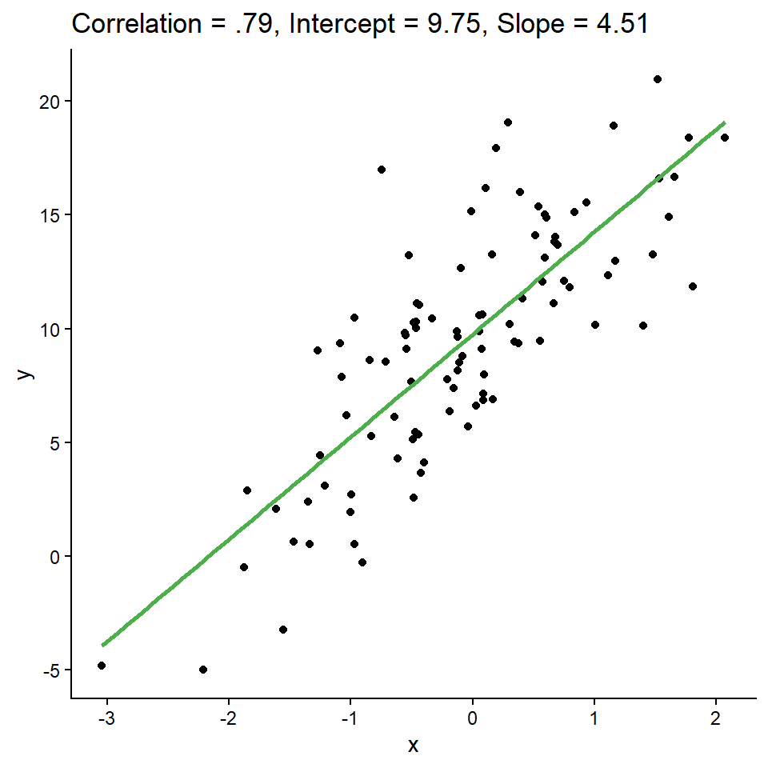
Last time, we saw that we can help summarize a scatterplot with a regression line
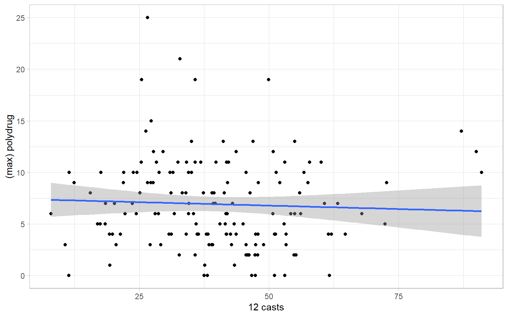

The form of the simple linear regression model is as follows:
| Population | Sample |
|---|---|
| \(y_{i} \mid x_{i} = b_{0} + b_{1}x_{i} + e_{i}\) | \(y_{i} \mid x_{i} = \hat{b}_{0} + \hat{b}_{1}x_{i} + e_{i}\) |
| \(\hat{y}_{i} = b_{0} + b_{1}x_{i}\) | \(\hat{y}_{i} = \hat{b}_{0} + \hat{b}_{1}x_{i}\) |
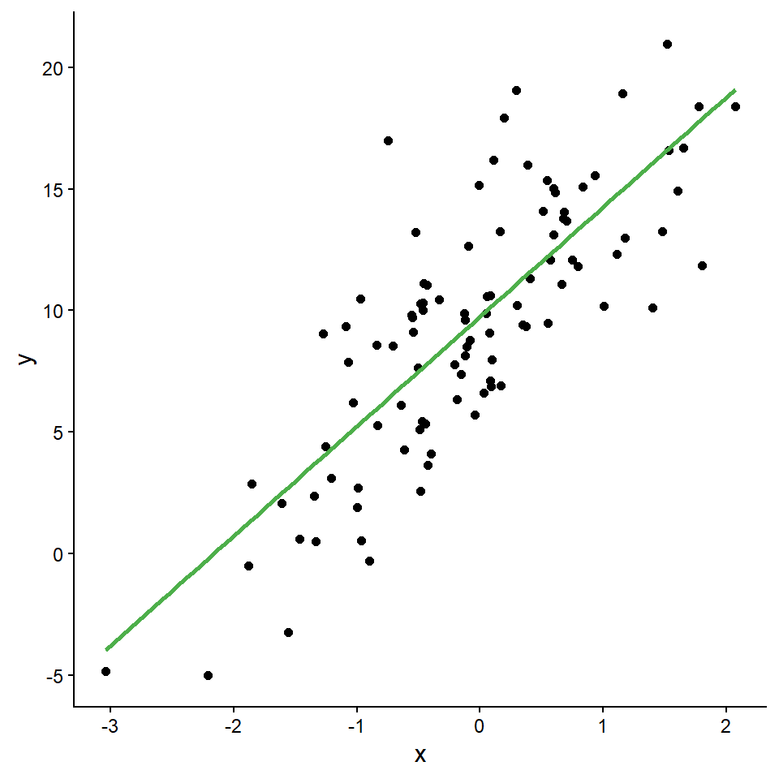
In this example,
\[\hat{y}_i = 9.75 + 4.51x_i\]
This is the equation of the green best-fit line
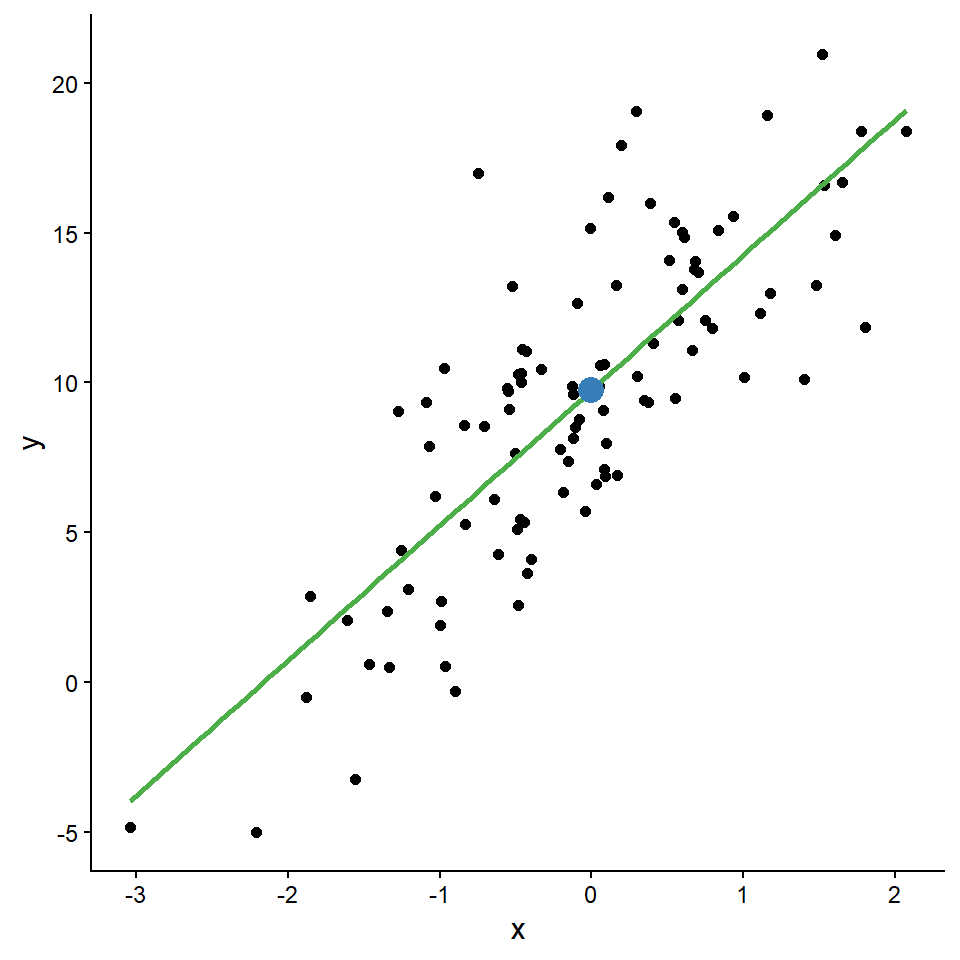
In this example,
\[\hat{y}_i = 9.75 + 4.51x_i\]
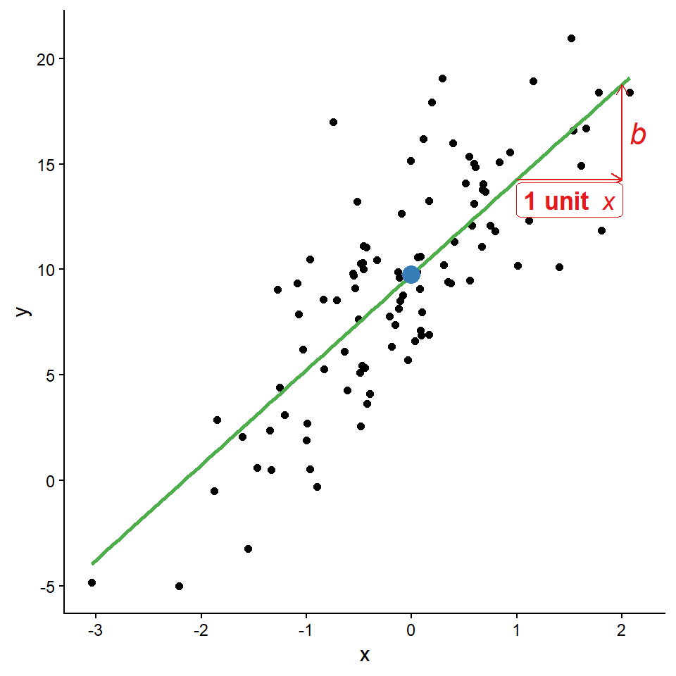
In this example,
\[\hat{y}_i = 9.75 + 4.51x_i\]
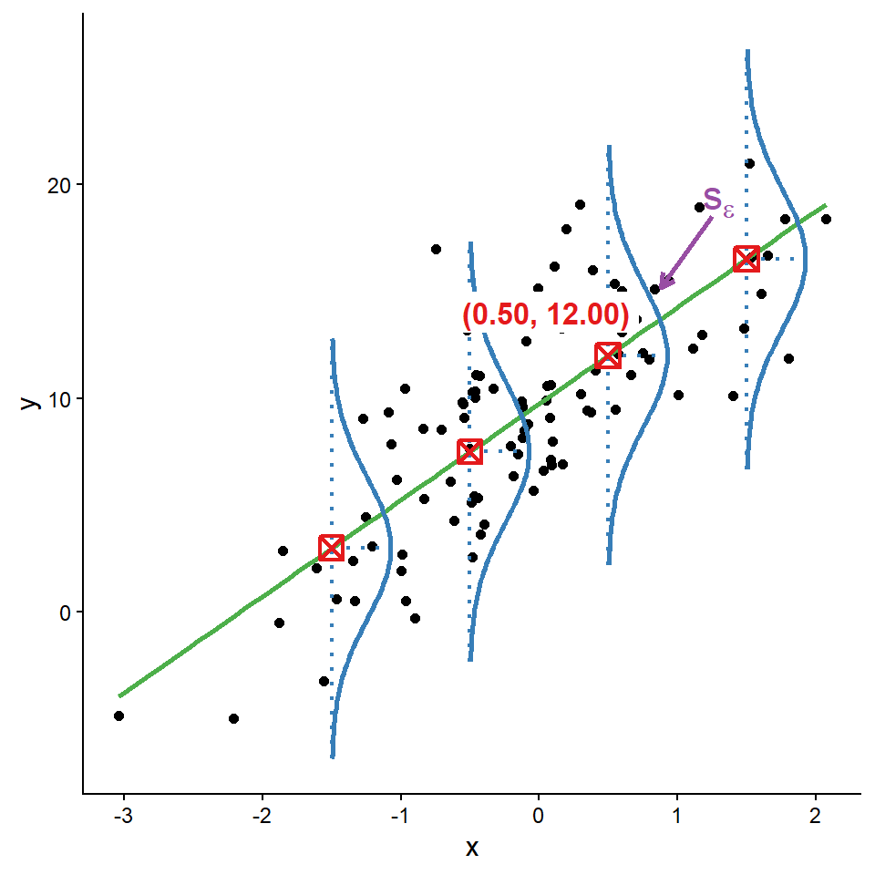
The best-fit line follows the form:
\[\hat{y}_i = \hat{b}_0 + \hat{b}_1 x_i\]
The estimated regression coefficients (\(\hat{b}_0\) and \(\hat{b}_1\)) are functions of familiar descriptive statistics:
\[\hat{b}_1 = \frac{s_{xy}}{s^2_{x}}\]
\[\hat{b}_0 = \bar{y} - \hat{b}_1 \bar{x}\]
These are known as the normal equations
Where do these “normal equations” come from?
Method of ordinary least squares (OLS):
\[(\hat{b}_0, \hat{b}_1)^\prime = \underset{b_{0},b_{1}}{\text{argmin}}\left[\sum_{i=1}^N(y_i - \hat{y}_i)^2\right] \\ = \underset{b_{0},b_{1}}{\text{argmin}}\left[\sum_{i=1}^N(y_i - b_0 - b_1x_i)^2\right]\]
OLS is the same loss function we use in ANOVA: minimize (sums of) squared errors between \(\hat{y}_i\)’s and the observed \(y_i\)’s
\[s_{y\cdot x} =\sqrt{\frac{\sum_{i=1}^N (y_i-\hat{y}_i)^2}{N-2}} = \sqrt{\frac{SS_{\text{residual}}}{df}}\]
\(R^2 = r_{xy}^2\) is the effect size of the simple linear regression model
Sample variation of \(\color{#FF7F00}{\underset{\text{\small sum of\\squares}}{{SS_y}}}\) = numerator of sample variance of y
\[SS_y = \sum_{i=1}^N(y_i - \bar{y})^2\]
\((y_i - \bar{y})\) can be decomposed into two parts:
\[ \color{#377EB8}{\underbrace{\color{black}{(y_i - \bar{y})}}_{\substack{\nearrow \\[0.2em] \text{\textbf{total}} \\ \text{variation of } y}}} = \color{#984EA3}{\underbrace{\color{black}{(y_i - \hat{y}_i)}}_{\substack{\uparrow \\[0.2em] \text{variation of } y \\ \text{\textbf{NOT} predicted by } x}}} + \color{#4DAF4A}{\underbrace{\color{black}{(\hat{y}_i - \bar{y})}}_{\substack{\nwarrow \\[0.2em] \text{variation of } y \\ \text{predicted by } x}}} \]
Sample variation of \(y\) (\(SS_y\)) can be decomposed into two parts:
\[SS_y = SS_{\text{residual}} + SS_{\text{regression}} \\ \sum(y_i - \bar{y})^2 = \sum(y_i - \hat{y}_i)^2 + \sum(\hat{y}_i - \bar{y})^2\]
\[R^2 = \frac{SS_{\text{regression}}}{SS_y} = 1 - \frac{SS_{\text{residual}}}{SS_y}\]
In the simple regression model, \(R^2 = r^2_{xy}\)
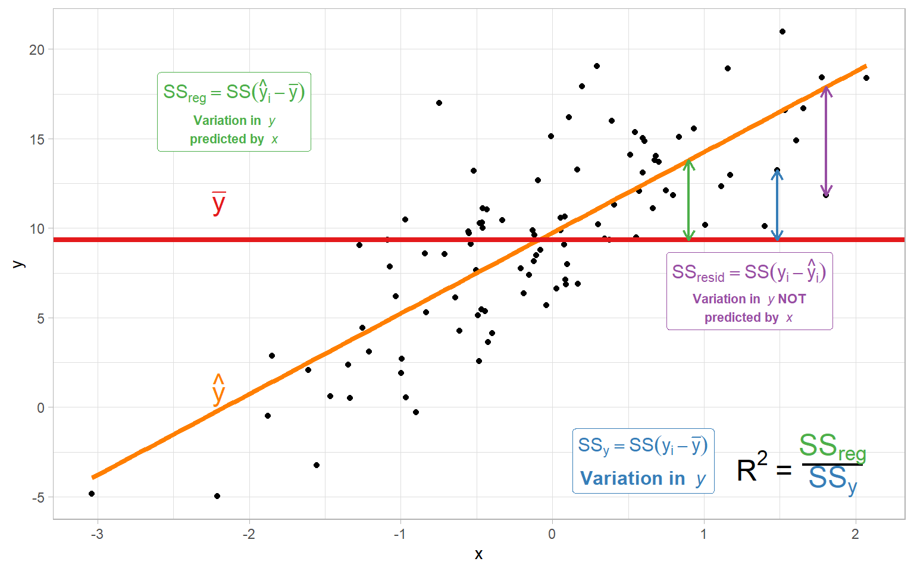
\(R^2\) represents how different the best fitting regression line is along the \(y\)-axis than the simple mean of \(y\)
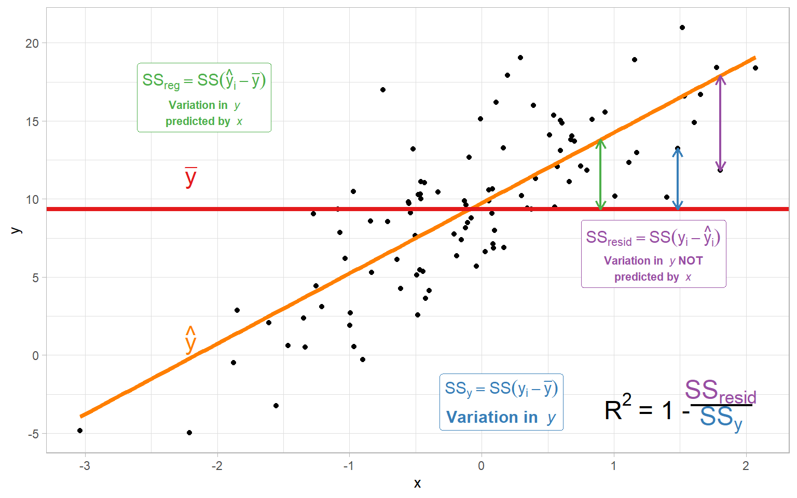
\(R^2\) represents how much smaller the residuals are for the regression line than for the simple mean of \(y\)
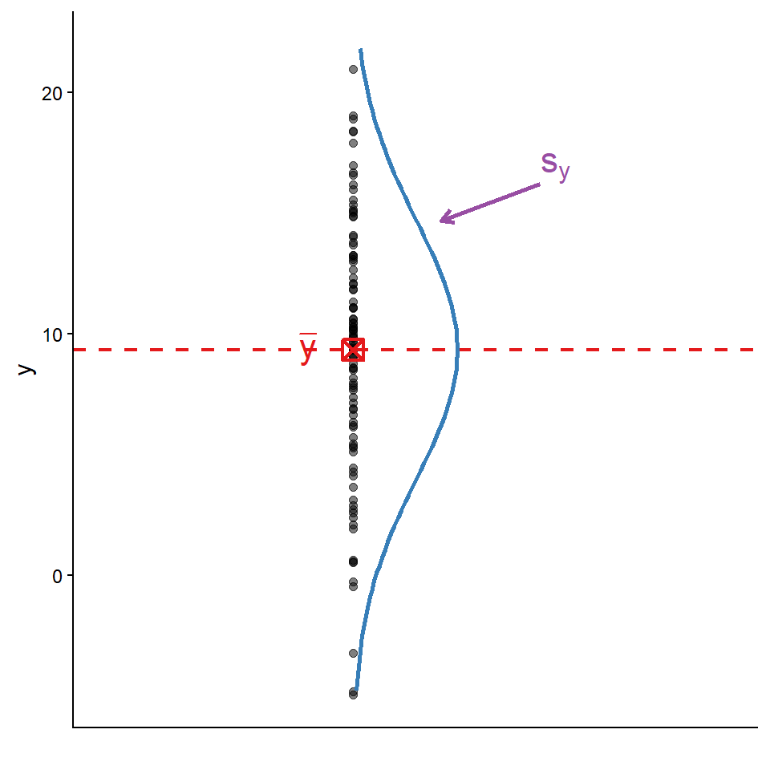
\[\text{Adjusted }R^2 = \left(R^2 - \frac{1}{N-1}\right)\left(\frac{N-1}{N-2}\right)\]
What happens if we standardize \(x\) and \(y\)?
What is standardization?
Standardized regression coefficients are those that describe the relationship between standardized variables
Standardized \(\hat{b}_0 = 0\) and \(\hat{b}_1 = r_{xy}\).
Unstandardized \(\hat{b}_1 = \frac{r_{xy}s_y}{s_x}\)
Unstandardized \(\hat{b}_0 = \bar{y} - \hat{b}_1\bar{x}\) (unstandardized \(\hat{b}_1\))
\[t_{\text{obs}}(df) = \frac{\hat{b}_0}{s_{\hat{b}_0}} \hspace{1cm} s_{\hat{b}_0}= \sqrt{\left(\frac{(1 - r^2_{xy})\times\sum(y_i - \bar{y})^2}{df}\right)\left(\frac{1}{N} + \frac{\bar{x}^2}{(N-1)\times s^2_{x}}\right)}\]
Under \(H_0\), \(t_{\text{obs}}(df)\) is \(t\)-distributed with \(df = N - 2\) degrees of freedom
Confidence interval:
\[\hat{b}_0 \pm t(df)_{\alpha/2} \times s_{\hat{b}_0}\]
What is the interpretation of the intercept?
\[t_{\text{obs}}(df) = \frac{\hat{b}_1}{s_{\hat{b}_1}}\]
\[s_{\hat{b}_1}= \frac{s_y}{s_x}\sqrt{\frac{1 - r^2_{xy}}{df}}\]
Under \(H_0\), \(t_{\text{obs}}(df)\) is \(t\)-distributed with \(df = N - 2\) degrees of freedom
Confidence interval:
\[\hat{b}_1 \pm t(df)_{\alpha/2} \times s_{\hat{b}_1}\]
\[F_{\text{obs}}(1, N-2) = \frac{MS_{\text{regression}}}{MS_{\text{residual}}}\]
Under \(H_0\), \(F_{\text{obs}}\) follows the \(F\) distribution with 1 and \(N-2\) \(df\)
For simple regression (just one \(x\)), the following tests are all equivalent:
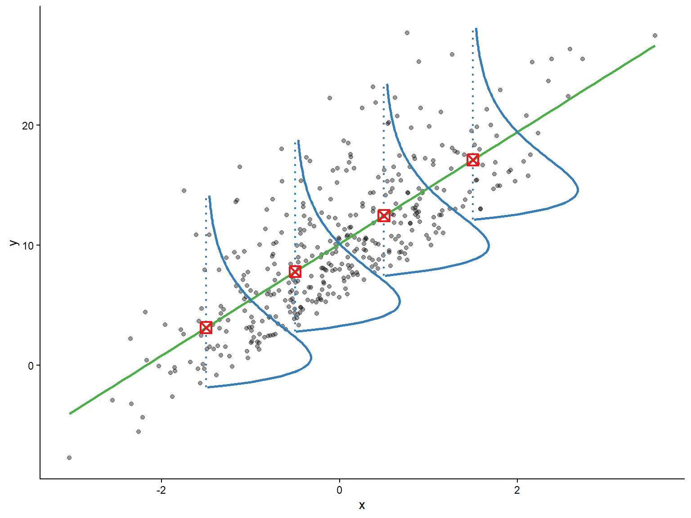
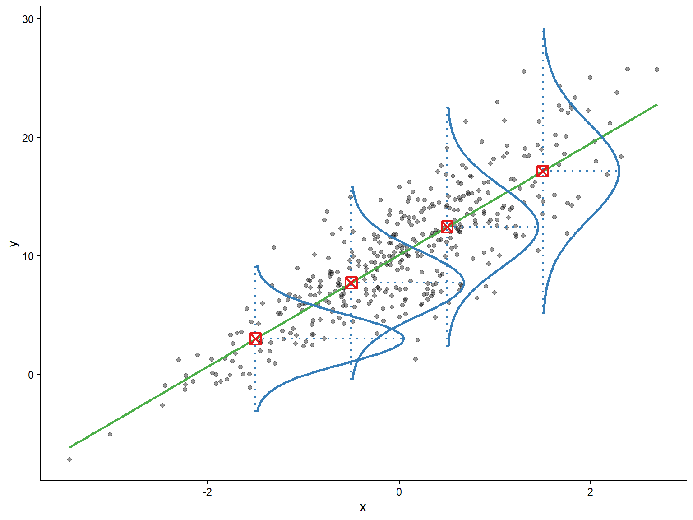
Models can be used for different purposes:
Our assumptions are primarily used to delineate the conditions under which hypothesis tests have known properties.
However they also can set the terms for which are descriptions can be correct and our predictions are likely to be accurate.
Original Study:
Pleskac, T. J. (2008). Decision making and learning while taking sequential risks. Journal of Experimental Psychology: Learning, Memory, and Cognition, 34, 167-185.
Replication study link: https://osf.io/3amj4
To what extent is the learning aspect of risk-taking behavior related to risky drug use?
ART = Angling Risk Tasks, computer game to study risk-taking behavior
Game play:
Conditions:
Each subject was exposed to 30 reps of all 4 combinations of conditions:
Variables:
Original comparisons of interest:
Let’s test a simpler hypothesis:
Call:
lm(formula = polydrug ~ KC, data = dat)
Residuals:
Min 1Q Median 3Q Max
-7.3062 -2.9767 -0.7359 2.8687 17.8964
Coefficients:
Estimate Std. Error t value Pr(>|t|)
(Intercept) 7.45812 1.00642 7.411 8.32e-12 ***
KC -0.01333 0.02367 -0.563 0.574
---
Signif. codes:
0 '***' 0.001 '**' 0.01 '*' 0.05 '.' 0.1 ' ' 1
Residual standard error: 4.401 on 151 degrees of freedom
Multiple R-squared: 0.002095, Adjusted R-squared: -0.004514
F-statistic: 0.3169 on 1 and 151 DF, p-value: 0.5743\[\widehat{\text{polydrug}} = \hat{b}_0 + \hat{b}_1 \text{KC}\]
| Coefficient | Estimate | SE | \(t\) | \(p\) |
|---|---|---|---|---|
| Intercept (\(\hat{b}_0\)) | 7.46 | 1.01 | 7.41 | <.001 |
| KC (\(\hat{b}_1\)) | -0.01 | 0.02 | -0.56 | .574 |
\(R^2 = 0.002, F(1, 151) = 0.32, p = .57\)
We can use the scale() function to standardize variables and then review the standardized regression result
Call:
lm(formula = Z_polydrug ~ Z_KC, data = dat)
Residuals:
Min 1Q Median 3Q Max
-1.6640 -0.6780 -0.1676 0.6534 4.0760
Coefficients:
Estimate Std. Error t value Pr(>|t|)
(Intercept) 6.063e-17 8.103e-02 0.000 1.000
Z_KC -4.577e-02 8.129e-02 -0.563 0.574
Residual standard error: 1.002 on 151 degrees of freedom
Multiple R-squared: 0.002095, Adjusted R-squared: -0.004514
F-statistic: 0.3169 on 1 and 151 DF, p-value: 0.5743Note that in the standardized result: - \(b_0 \approx 0\) (slightly different due to rounding) - \(b_1 = r_{\text{KC, polydrug}}\)*
Assumptions are typically check graphically
First we use residuals() function to extract residuals
Then we can create a QQ plot like we’ve learned
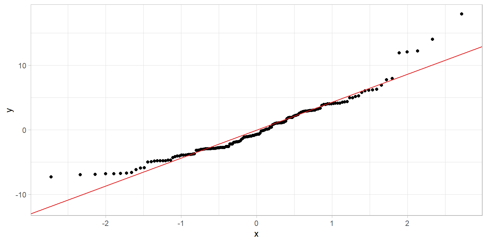
For homoscedasticity, I will
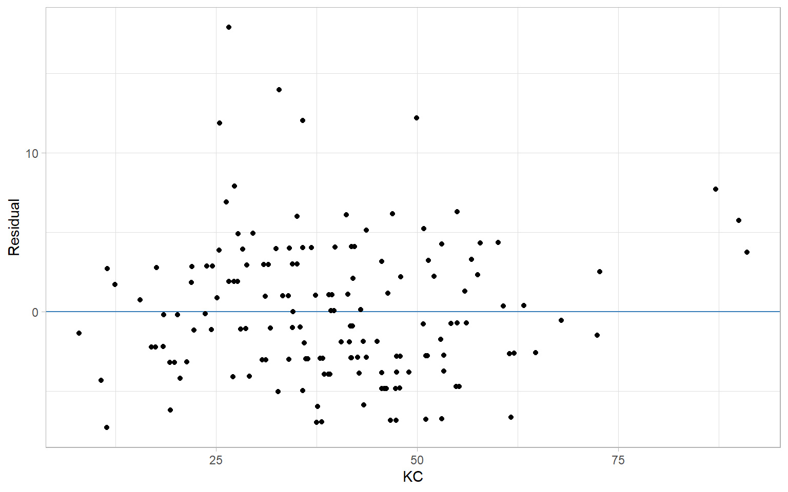
A simple linear regression of Catch and Keep scores on a Cloudy Day (KC) on risk taking behavior was not significant, \(F(1, 151) = 0.32, p = .56, R^2 = 0.002\). The intercept was significantly different from zero, \(b_0 = 7.45, t(151) = 7.41, p < .001\). The slope was not significantly different from zero, \(b_1 = -0.01, t(151) = 0.56, p = .57\)
(I usually wouldn’t include the intercept, but put it here for reference)
We can do simple regression in rstanarm exactly as we have seen every other time we have estimated a linear model (it’s more what rstanarm was built to do!)
Model Info:
function: stan_glm
family: gaussian [identity]
formula: polydrug ~ KC
algorithm: sampling
sample: 4000 (posterior sample size)
priors: see help('prior_summary')
observations: 153
predictors: 2
Estimates:
mean sd 2.5% 50% 97.5%
(Intercept) 7.46 1.00 5.50 7.44 9.44
KC -0.01 0.02 -0.06 -0.01 0.03
sigma 4.42 0.25 3.98 4.41 4.95
Fit Diagnostics:
mean sd 2.5% 50% 97.5%
mean_PPD 6.92 0.50 5.93 6.91 7.91
The mean_ppd is the sample average posterior predictive distribution of the outcome variable (for details see help('summary.stanreg')).
MCMC diagnostics
mcse Rhat n_eff
(Intercept) 0.02 1.00 3844
KC 0.00 1.00 3910
sigma 0.00 1.00 4032
mean_PPD 0.01 1.00 3887
log-posterior 0.03 1.00 1624
For each parameter, mcse is Monte Carlo standard error, n_eff is a crude measure of effective sample size, and Rhat is the potential scale reduction factor on split chains (at convergence Rhat=1).Because Bayesian estimates aren’t deterministic the way the simple OLS algorithm is, the traditional \(R^2\) is not guaranteed to be \(0 \leq R^2 \leq 1\)
Alternative:
\[\text{Bayesian } R^2 = \frac{s_{\hat{y}}^2}{s_{\hat{y}}^2 + s_{\epsilon}^2}\]
Using Bayesian estimation, we fit a simple regression of Catch and Keep scores on a Cloudy Day (KC) on risk taking behavior. The intercept had a posterior mean \(b_0 = 7.46, 95% CI = [5.46, 9.39]\). The slope had a posterior mean \(b_1 = -0.01, 95% CI = [-0.06, 0.03]\). The posterior mean Bayesian \(R^2 = 0.004, 95% CI = [<.001, 0.031]\), suggesting KC scores explained between 0 and 3% of the variance in risk taking behavior.
(I usually wouldn’t include the intercept, but put it here for reference)